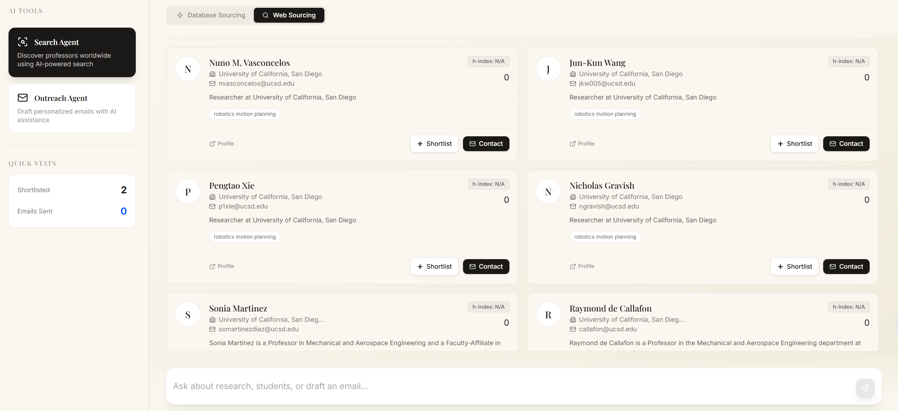

Featured
Projects
/ Engineering + Research

terny.ai
Agentic System Architecture
设计并实现基于 Multi-Agent 架构的端到端科研智能匹配系统。底层结合自动化爬虫与 LLM，对非结构化科研网站进行语义解析与结构化抽取，构建可持续更新的科研机会知识库。构建多智能体协同流水线，将研究方向语义建模、学生能力建模与匹配决策解耦，实现全链路自动化推荐。
Python
Multi-Agent
Observability
查看 terny.ai Website
In Progress
GNN &
Transformer
GNN &
Transformer
材料性质预测引擎
Deep Learning Engineering
围绕 OC22 材料数据集完成深度学习工程化部署。独立搭建并深度重构 PyTorch 训练框架，优化计算图组织与数据流水线。设计融合 GNN 与 Transformer 的混合架构，实现局部结构特征与全局关联信息的联合建模。通过多维节点嵌入与向量映射机制，提高模型在复杂材料图结构上的表达效率与训练稳定性。
PyTorch
GNNs
Transformer